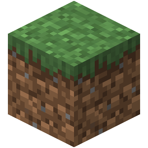

Most of my Java experience has been in personal and commercial projects that involve the spigot api. The spigot api is used in pair with spigot mulitplayer minecraft servers. The programs that are written with this api add certain functionality to minecaft that normally would not be there. The projects that I work on either are uploaded online for anyone to use or for a certain minecraft network. I have been developing in Java with the spigot api for about a year and it has highly benefited my skillset.